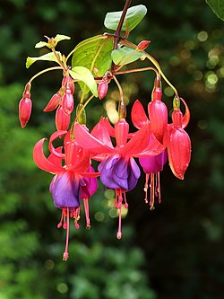

Fuchsia
{kind=link}

Fuchsia is a genus of flowering plants that consists mostly of shrubs or small trees. Almost 110 species of Fuchsia are recognized; the vast majority are native to South America, but a few occur north through Central America to Mexico, and also several from New Zealand to Tahiti. One species, F. magellanica, extends as far as the southern tip of South America, occurring on Tierra del Fuego in the cool temperate zone, but the majority are tropical or subtropical.
The flowers are very decorative; they have a pendulous teardrop shape and are displayed in profusion throughout the summer and autumn, and all year in tropical species. They have four long, slender sepals and four shorter, broader petals; in many species, the sepals are bright red and the petals purple (colours that attract the hummingbirds that pollinate them), but the colours can vary from white to dark red, purple-blue, and orange. A few have yellowish tones. The ovary is inferior. The fruit is a small (5–25 mm) dark reddish green, deep red, or deep purple berry, containing numerous very small seeds. The fruit of the berry of F. splendens is reportedly among the best-tasting. Its flavor is reminiscent of citrus and black pepper, and it can be made into jam. The fruits of some other fuchsias are flavorless or leave a bad aftertaste.[8] In most species, the flowers are bird-pollinated and the seeds dispersed also by birds.
Read more...